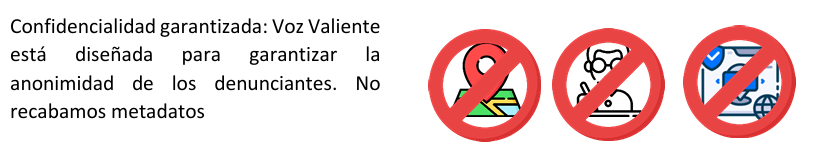

Inicio
Denuncia con mayor facilidad con Voz Valiente, un canal de denuncia anónimo hecho a la medida de tu empresa.
✔ Voz Valiente un canal de denuncia anónimo hecho a la medida de tu empresa.
✔ Descubre irregularidades de todo tipo
✔Beneficio al control interno
✔ Apoyo a la administración de riesgos
✔ Descubre las faltas de conductas de los colaboradores
✔ Prevención de perdidas financieras y disputas legales
Agenda tu demostración y solicita tu prueba gratuita por 14 dias

Un sistema diseñado pensando en tus necesidades
Diseñado para que desde el primer contacto se pueda recopilar la información necesaria.
Sistema automatizado: a través de la configuración, los casos son asignados automáticamente a los gestores.
Interfaz intuitiva y de fácil uso
Equipo de soporte de atención rapida
Canal de denuncias
Como se señala en la Guía de gestión del riesgo de fraude de COSO/ACFE, un sistema de controles antifraude bien diseñado e implementado eficazmente es uno de los principios fundamentales de un programa holístico de gestión del riesgo de fraude. Pero la presencia de cualquier control específico o combinación de controles no garantiza que no ocurrirá fraude. De hecho, como se muestra en la Siguiente Grafico, en el momento en que ocurrieron los fraudes existían muchos controles antifraude en las organizaciones víctimas de nuestro estudio.
MECANISMOS DE REPORTE
En los casos descubiertos por una denuncia, les pedimos a los encuestados información adicional sobre cómo se reportó la denuncia. Más de la mitad de las denuncias de nuestro estudio (53%) se proporcionaron a través de un mecanismo formal de denuncia, como una línea directa. La siguiente grafica refleja los tipos específicos de estos mecanismos formales de denuncia utilizados por los denunciantes de fraude en el transcurso de nuestros últimos cinco estudios. Si bien las líneas telefónicas directas han sido históricamente uno de los mecanismos más comunes utilizados por los denunciantes, el porcentaje de denuncias reportadas por teléfono ha ido disminuyendo. Desde 2018, el correo electrónico y los formularios de denuncia en línea han superado a las líneas telefónicas directas como mecanismo de denuncia. Además, nuestro estudio actual incluye un nuevo método de denuncia, el mensaje de texto, que representó el 3% de las propinas recibidas reportadas. Estos datos sugieren que los métodos preferidos de los denunciantes para denunciar el fraude son diversos y están en constante evolución, especialmente en lo que respecta a los formularios en línea y electrónicos
Contacto
Si deseas más información, contáctanos y agenda tu demostración gratuita.